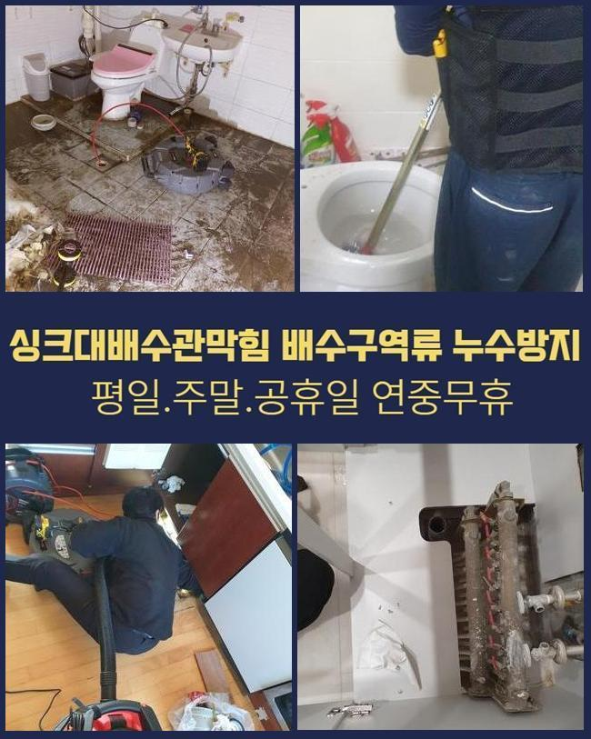
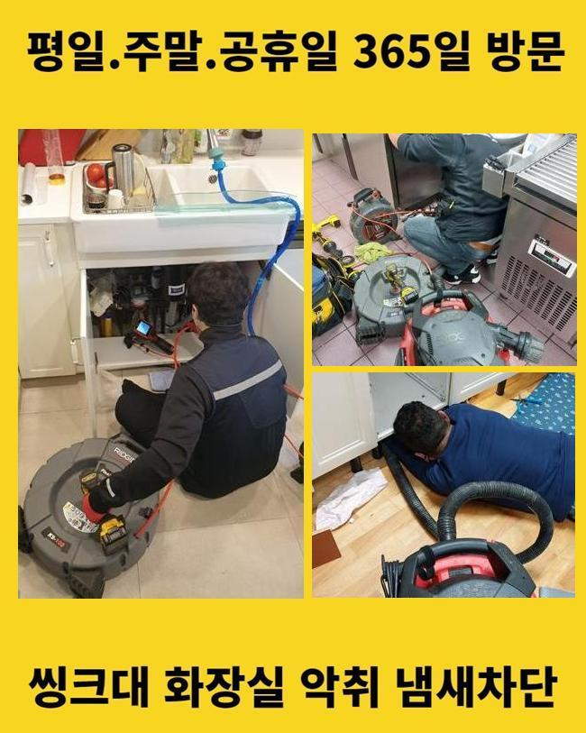
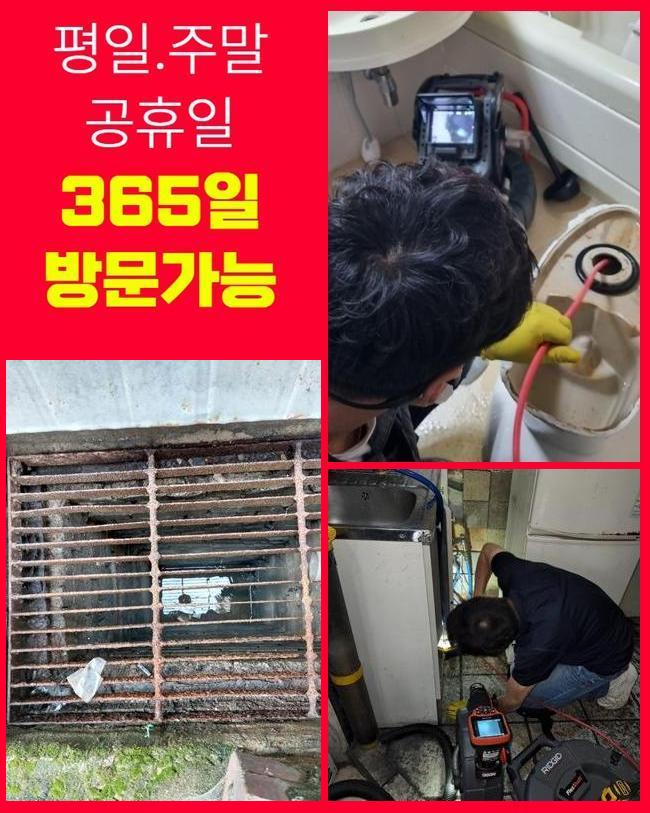
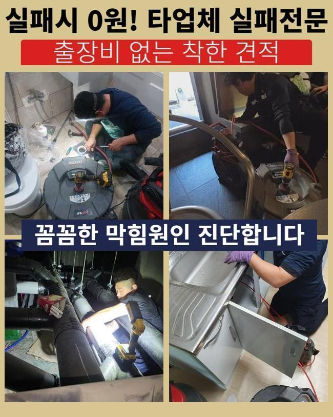
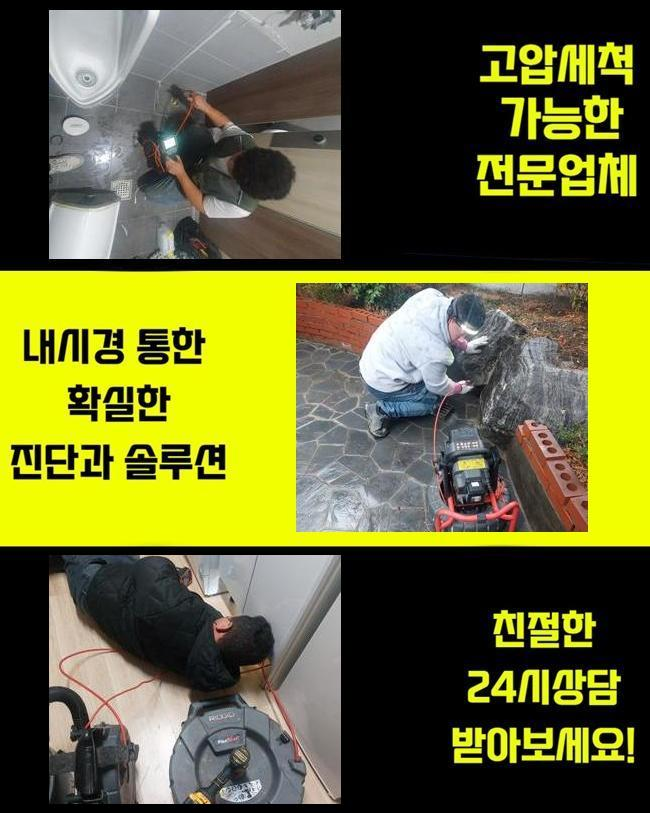
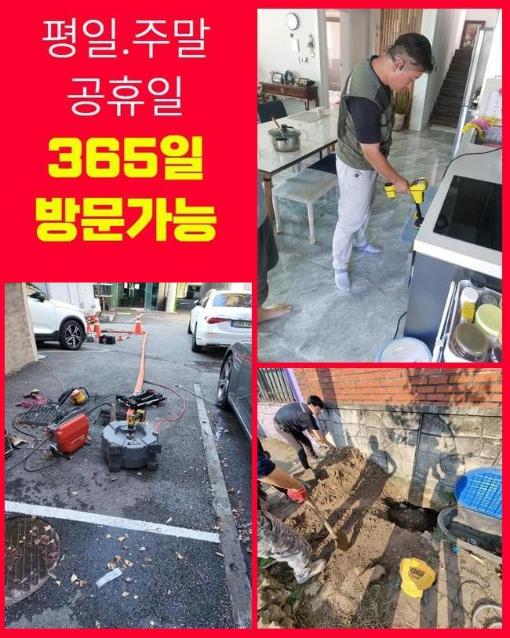

🏠 수원 남향동싱크대역류 화서동 하수구뚫는비용 누수
수원 싱크대막힘 전문 시공 후기

📋 작업 개요
- 위치: 수원
- 서비스 유형: 싱크대막힘, 하수구막힘, 배관막힘, 맨홀막힘, 누수수리, 역류해결, 뚫는업체, 배관청소
- 작업 일시: 2025. 1. 21. 18:29
- 업체명: 하수구수사대 (010-5615-2118)
🔍 문제 상황
수원 남향동싱크대역류 화서동 하수구뚫는비용 누수
주방에서 주방라인이 막힌다면 식자재를 취급하는것에 불편들을 감내해야하죠
요식업소에서 위와같은 증상이 발생하게된다면 운영측면에도 좋지못한 영향들을 주죠
그러므로 안정적이고 해결해주는것이 필요하겠습니다
식당내측의 주방라인에서 배수들이 안되는 문제들이 나타나게 되었어요
주변의 식당에까지 배수불가의 증상이 관찰되었는데요
이런 증상은 메인배수관에 원인들이 자리했을 가능성들을 배제할 수 없죠
그러므로 똑같은하수도를 이용하는 맨홀쪽의 점검까지 수반되야되는 장소였어요
내방드리고서 먼저 주방 주방라인이 기능적 결함을 보이는것을 목격했어요

🔎 원인 분석
💡 전문가 진단: 정밀 진단 장비를 사용하여 슬러지의 고착 여부를 판명하고 타격/세척 작업을 실시했습니다.
작업 과정에서문에 물빠짐이 진행되지 않았고 시공이 필요했죠
배수관의 문제들은 수많은 요소로 등장하는데 수많은 현장 경험으로 미루어볼때 대다수의 까닭은 노후되거나 잔여물질들이 축적되어서죠
막히는 증상은 위생적인 부분에도 좋지못한 영향력들을 끼쳐서 그에 맞는 해결책들을 꾀했어요
내시경카메라를 하수도로 투입시키며 상태들을 파악해보니 여기저기에 이물질이 자리한것을 들여다보았습니다
내시경장치는 협소한 하수도를 확인하는 기계로 투입되는 줄을 하수관으로 삽입하여 송출화면으로 육안으로 관찰하게해주는 기기입니다
살펴보았더니 이물들이 배출이 안되고 정체된 상태였어요
배수관이 오래된 경우라던가 구조상의 문제였다기보단 배수 과정에서 흘러나가는 식자재의 잔해가 쌓이게되어 배수진행을 멈추게한것이 그 까닭이였습니다
싱크대를 포함해 트렌치와 밖의 하수관이 이어져있는 구조라 주방에서 나타난 문제들이 외부라인에 영향력들을 미친 상황이였죠
까닭들을 체크해보고 즉시 관로들을 조치할 생각으로 청소했는데요
해당 시점에 써준것은 플렉스 샤프트라는 장치로써 해당 기계는 배수관에서 돌아가면서 고착물들을 청소해주는 결정적인 장비이죠

🔧 작업 과정
샤프트의 사슬들을 삽입하여주면 주방라인이 막힌 때에 오염원을 떨궈내고 더 나아가 배수관을 손상케하는 일도 없고 안전히 청소해줍니다
샤프트기기를 이용하여 이물이 있는 위치에 접근한 다음 체인으로 오염물질들을 없애주었어요
폐기물이 샤프트도구에 걸려서 빠져나왔어요
뒤섞인 잔해를 관찰하니 예상한 바와 같이 개수대에서 침투된 식자재들과 기름성분이 상당했죠
이 중 음식물의 잔해가 대다수였는데 손질전의 제거된 뿌리의 모습들로 싱크볼에서 빠지면서 정체를 일으키는 주범으로 작용했죠
뿌리부분으로 말씀드리면 녹지 못해 내측에서 끼게되어 통수를 불가능하게 해요
음식폐기물과 기름들까지 많은 양들이 배출됐는데 하수관에서 사용하는 기름들이 관로로 흐르면서 중간중간에 흡착된거죠
기름성분은 관로에서 조금씩 단단해지며 내부표면에 붙게되고 다른 식재료와 뒤섞여 더욱 빠르게 문제들을 양산시키게되요
오일들은 지속해서 굳게되어 간단하게 제거시키는것에 무리가따르는 케이스가 8할 이상이죠
노커체인을 사용해 청소를 실시하고 흡입장치를 준비시켜 잔존하는 이물들을 흡입하여 놓친 부분없이 정리했는데요
고형상태에 있던 기름뭉치와 떨어져나온 찌꺼기들까지 정리해주고 배수관을 내시경케이블을 통해 검수하며 작업결과를 목격했어요
증상들은 시정되었으며 밖의 하수관의 솟아오르는 증세도 깔끔히 제거했죠
저희의 전문가들은 의뢰인분에게 씽크대 관로의 주의사항과 관련된 유용한 사항들까지 안내했는데요
먼저 배수구안으로 잔재들을 걸러주지않고 배출시키지 않는게 도움이된다고 전달했습니다
더군다나 단단한 음식물들이나 기름물질들은 하수구 막힘의 통수를 불가케하는 주범이 될 가능성이 높아 필히 잔여물질들을 씽크대로 배출하기 이전에 미리 버려주실것을 말씀드렸죠
기름들은 점성이 높고 내부에서 흡착되어버려서 사용한 기름물질들은 휴지등으로 닦은 뒤 버려주시는게 권장하고 있는 방식이에요


✅ 작업 완료
예상에 없던 배수정체를 피하려면 계속해서 하수관들을 청소해주고 필요할 경우 크리너를 이용해보는것이 좋다고 일러드렸어요
의뢰인분은 저희의 설명을 듣고서 신경써서 관리실시를 신경써서 하실것을 말하셨는데요
하수구 증상들은 조금이라도 소홀히하면 처음보다 심각해져서 조기에 서둘러 대응해주는게 중요하겠습니다
끝내 의뢰자의 애로사항들을 해결해드려 안심할 수 있었고 예상치못한 물 안빠짐 현상을 막기위하여 적재적소의 점검실시가 동반해야할 것을 최종적으로 말씀드립니다



⚠️ 베란다 누수 및 방수 관리 방법
- ✅ 비가 많이 올 때 창틀 주변이나 아래층 천장에 얼룩이 생기는지 정기적으로 확인해 보세요.
- ✅ 우수관 주변 실리콘 마감이 들뜨거나 깨진 틈새가 있는지 손상 여부를 수시로 체크하세요.
- ✅ 베란다 바닥 타일의 줄눈(메지)이 소실되면 그 틈으로 물이 침투하여 누수가 유발됩니다.
- ✅ 누수 의심 증상 발견 시 방치하면 아래층 손실이 커지므로 즉시 전문가의 진단을 받으십시오.
💡 핵심 정리
- 확실한 장비 작업(내시경 점검 및 샤프트 스케일링)으로 원인을 뿌리 뽑습니다.
- 작업 후 1년 이내에 동일한 부위 재발 시 100% 무상 A/S 서비스를 보장합니다.
- 서울 · 경기 · 인천 전 지역에 24시간 언제든 긴급 출동할 수 있도록 항시 대기 중입니다.
❓ 자주 묻는 질문 (FAQ)
🚨 수원 싱크대막힘 문제로 고민이신가요?
정확한 원인 진단과 확실한 시공으로 재발 없는 해결을 약속드립니다.
24시간 긴급 출동 | 서울 · 경기 · 인천 전지역 | 1년 내 재발 시 무상 A/S